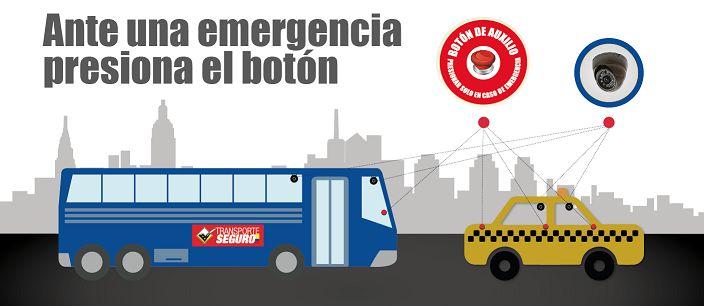

|  |
Traslado cómodo y seguro en los buses y taxis identificados con el logo TRANSPORTE SEGURO. Estas unidades son registradas y reconocidas por la Agencia Nacional de Tránsito y cuentan con 3 botones de pánico y cámaras de video vigilancia conectadas con ECU911.